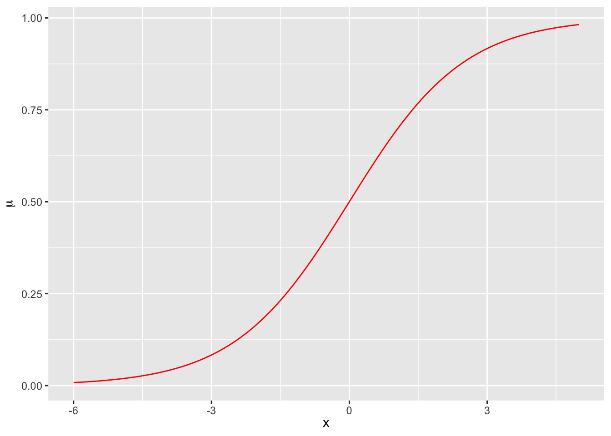

MA8701 Advanced methods in statistical inference and learning
P1W1: Core concepts in statistical decision theory
Messages to students
Course homepage: https://wiki.math.ntnu.no/ma8701/2025v/start
Read before the W1-lecture: ESL 2.2, 2.4, 3 (except 3.2.3, 3.2.4, 3.4, 3.7, 3.8), 4.1-4.5 (except 4.4.4). The only new topic (not taught in recommended courses) is 2.4.
Work on exercises in the bottom of this page after the W1-lecture.
Learning
Herbert A. Simon (Cognitive science, Nobel Laureate): Learning results from what the student does and thinks and only from what the student does and thinks. The teacher can advance learning only by influencing what the student does to learn.
Plan for W1
- Notation (ESL Ch 2.2)
- Regression - should be known from before (ESL Ch 3, except 3.2.3, 3.2.4, 3.4, 3.7, 3.8)
- Statistical decision theoretic framework for regression (ESL 2.4)
- Classification - should be known from before (ESL Ch 4.1-4.5, except 4.4.4)
- Statistical decision theoretic framework for classification (ESL 2.4)
Core concepts
Notation
(mainly from ESL 2.2)
We will only consider supervised methods.
- Response \(Y\) (or \(G\)): dependent variable, outcome, usually univariate (but may be multivariate)
- quantitative \(Y\): for regression
- qualitative, categorical \(G\): for classification, some times dummy variable coding or one-hot coding used (what is the difference?)
- Covariates \(X_1, X_2, \ldots, X_p\): “independent variables”, predictors, features
- continuous, discrete: used directly
- categorical, discrete: often dummy variable coding or one-hot coding used (again, difference?)
We aim to construct a rule, function, learner: \(f(X)\), to predict \(Y\) (or \(G\)).
Random variables and (column) vectors are written as uppercase letters \(X\), and \(Y\), while observed values are written with lowercase \((x,y)\). (Dimensions specified if needed.)
Matrices are presented with uppercase boldface: \(\boldsymbol{X}\), often \(N \times (p+1)\). ESL uses boldface also for \(\boldsymbol{x}_j\) being a vector of all \(N\) observations of variable \(j\), but in general vectors are not boldface and the vector of observed variables for observation \(i\) is just \(x_i\).
Random variables and random vectors
Both the response and covariates will be considered to be random, and drawn from some joint distribution \(P(X_1,X_2,\ldots, X_p,Y)=P(X,Y)\) or \(P(X,G)\).
Joint to conditional and marginal distribution: \(P(X,Y)=P(Y \mid X)P(X)\) or \(P(Y\mid X=x)P(X=x)\) or
\[P(Y=y ,X=x)=P(Y=y\mid X=x)P(X=x)\]
Maybe brush up on this?
Resources
- From TMA4268: Module 2 - Random vectors
- From TMA4267: Part 1: Multivariate random variables and the multivariate normal distribution
Training set
(ESL 2.1)
A set of size \(N\) of independent pairs of observations \((x_i,y_i)\) is called the training set and often denoted \(\mathcal{T}\). Here \(x_i\) may be a vector. Also \((X,Y)=\mathcal{T}\) is used in articles.
The training data is used to estimate the unknown function \(f\).
Validation and test data
Validation data is used for model selection (finding the best model among a candidate set).
Test data is used for model assessment (assess the performance of the fitted model on future data).
We will consider theoretical results, and also look at different ways to split or resample available data.
More in ESL Chapter 7.
Group discussion
Two core regression methods are multiple linear regression (MLR) and \(k\)-nearest neighbour (kNN).
Choose one of the two methods:
- Set up the formal definition for \(f\), and model assumptions made
- What top results do you remember? Write them down.
- Are there challenges with the method?
Regression and MLR
See also the exercises!
Resources
(mostly what we learned in TMA4267, or ESL Ch 3, except 3.2.3, 3.2.4, 3.4, 3.7, 3.8)
- From TMA4268: Overview and in particular Module 3: Linear regression
- From TMA4315: Overview and in particular Module 2: MLR
For \(k\)NN see also Problem 1 of the TMA4268 2018 exam with solutions
Statistical decision theoretic framework for regression
(ESL Ch 2.4, regression part)
is a mathematical framework for developing models \(f\) - and assessing optimality.
First, regression:
- \(X \in \Re^p\)
- \(Y \in \Re\)
- \(P(X,Y)\) joint distribution of covariates and response
Aim: find a function \(f(X)\) for predicting \(Y\) from some inputs \(X\).
Ingredients: Loss function \(L(Y,f(X))\) - for penalizing errors in the prediction.
Criterion for choosing \(f\): Expected prediction error (EPE) - later also to be referred to as Err.
\[ \text{EPE}(f)=\text{E}_{X,Y}[L(Y,f(X))]=\int_{x,y}L(y,f(x))p(x,y)dxdy\] Choose \(f\) to minimize the \(\text{EPE}(f)\).
Q: Why do we not involve the distribution of the random variable \(f(X)\), but instead the distribution of \(X\)?
Law of the unconscious statistican (from our introductory course in statistics): https://en.wikipedia.org/wiki/Law_of_the_unconscious_statistician and Thematics pages TMA4240/45.
What is the most popular loss function for regression?
Squared error loss
\[ \text{EPE}(f)=\text{E}_{X,Y}[L(Y,f(X))]=\text{E}_{X}\text{E}_{Y \mid X}[(Y-f(X))^2\mid X]\]
We want to minimize EPE, and see that it is sufficient to minimize \(\text{E}_{Y\mid X}[(Y-f(X))^2\mid X]\) for each \(X=x\) (pointwise):
\[ f(x)=\text{argmin}_c \text{E}_{Y \mid X}[(Y-c)^2 \mid X=x]\] This gives as result the conditional expectation - the best prediction at any point \(X=x\):
\[ f(x)=\text{E}[Y \mid X=x]\] Proof: by differentiating and setting equal 0. See also the exercises!
But, do we know this conditional distribution? In some cases only (which?). In practice: need to estimate \(f\).
What if the joint distribution is multivariate normal?
Conditionally (known from before):
if we assume that \((X,Y) \sim N_{p+1}(\mu,\Sigma)\) then we have seen (TMA4267) that \(\text{E}(Y\mid X)\) is linear in \(X\) and \(\text{Cov}(Y \mid X)\) is independent of \(X\).
The conditional distributions of the components are (multivariate) normal. \[\mathbf{X}_2 \mid (\mathbf{X}_1=\mathbf{x}_1) \sim N_{p2}(\mathbf{\mu}_2+\Sigma_{21}\Sigma_{11}^{-1} (\mathbf{x}_1-\mathbf{\mu}_1),\Sigma_{22}-\Sigma_{21}\Sigma_{11}^{-1}\Sigma_{12}).\]
Approximate linear model
But, also if we assume an approximate linear model: \(f(x)\approx x^T \beta\)
Marginally: \(\text{argmin}_{\beta} \text{E}[(Y-X^T\beta)^2]\) gives \(\beta=\text{E}[X X^T]^{-1}\text{E}[XY]\) (now random vectors).
We may replace expectations with averages in training data to estimate \(\beta\).
This is not conditional on \(X\), but we have assumed a linear relationship.
kNN and conditional expectation
Local conditional mean for observations in \(\cal T\) close to \({\mathbf x}_0\): \[\hat{f}({\mathbf x}_0)=\frac{1}{k}\sum_{i \in \cal N_k({\mathbf x}_0)}Y_i\]
Absolute loss
Regression with absolute (L1) loss: \(L(Y,f(X))=\lvert Y-f(X) \rvert\) gives \(\hat{f}(x)=\text{median}(Y\mid X=x)\).
Proof: for example pages 8-11 of https://getd.libs.uga.edu/pdfs/ma_james_c_201412_ms.pdf
Conclusions - and next step
- What are key take home messages so far?
Continue with the decision theoretic framework for classification.
- Classification - should not be new (ESL Ch 4.1-4.5, except 4.4.4)
- Statistical decision theoretic framework for classification (ESL 2.4)
Statistical decision theoretic framework for classification
(ESL Ch 2.4)
\[ \text{EPE}(f)=\text{E}_{X,Y}[L(Y,f(X))]=\int_{x,y}L(y,f(x))p(x,y)dxdy\] Choose \(f\) to minimize the \(\text{EPE}(f)\).
What changes do we need to do for classifiation?
- \(X \in \Re^p\)
- \(G \in {\cal G}=\{1,\ldots,K\}\)
- \(\hat{G}(X) \in {\cal G}=\{1,\ldots,K\}\) (why \(f\) for regression and \(\hat{G}\) for classification? strange?)
- \(L(G,\hat{G}(X))\) is a function with \(K\times K\) possible values where \(K=\lvert G \rvert\). We may present this as a matrix with with elements \(l_{jk}\) giving the price to pay to misclassify an observation with true class \(g_j\) to class \(g_k\).
- Elements on the diagonal of \(L\) is 0, and off-diagonal elements are often \(1\).
We would like to find \(\hat{G}\) to minimize the EPE:
\[\text{EPE}=\text{E}_{G,X}[L(G,\hat{G}(X))]=\text{E}_X \text{E}_{G\mid X}[L(G,\hat{G}(X))]\] \[=\text{E}_X \{ \sum_{k=1}^K L(g_k,\hat{G}(X))P(G=g_k \mid X=x) \} \]
Also here it is sufficient to minimize the loss for each value of \(x\) (pointwise)
\[ \hat{G}=\text{argmin}_{g \in {\cal G}}\sum_{k=1}^K L(g_k,\hat{G}(X))P(G=g_k \mid X=x) \]
In the special case of 0-1 loss (off-diagonal elements in \(L\) equal to 1) then all \(k\) except the correct class gives loss \(1\) with probability \(P(G=g_k \mid X=x)\). Summing over the wrong classes gives the same as taking \(1\) minus the conditional probability of the correct class \(g\).
\[\hat{G}=\text{argmin}_{g \in {\cal G}} [1-P(G=g \mid X=x)]\]
\[=\text{argmax}_{g \in {\cal G}}P(G=g \mid X=x)\]
The Bayes classifier classifies to the most probable class using the conditional distribution \(P(G \mid X)\). The class boundaries are the Bayes decision boundaries and the error rate is the Bayes rate.
Simple example
Let assume we have \(G=2\), \(p=1\), and know \(P(G=1 \mid X=x)=\frac{\exp(\beta_0+\beta_1 x)}{1+\exp(\beta_0+\beta_1 x)}\) where \(\beta_0=0\) and \(\beta_1=0.8\). The Bayes classifier classifies to group \(1\) if \(x>0\), as shown below.
In practice we don´t know that this is true or the value for the two parameters \(\beta_0\) and \(\beta_1\), so we estimate from data.
Group discussion
- What do we know about classification (TMA4268 and TMA4315 mainly, or ESL ch 4.1-4.5, except 4.4.4):
- What is the difference between discrimination and classification?
- What are the sampling vs diagnostic paradigm? Give an example of one method of each type. How does this relate to what we have learned about the optimal solution for the 0/1-loss?
- Give an example of one parametric and one non-parametric classification method.
Logistic regression is by many seen as the “most important method in machine learning”. What do we remember about logistic regression? (Will be a very important method in Part 2.)
What “changes” need to be done to 2) when we have \(K>2\) classes?
Resources
(mostly what we learned in TMA4267, or ESL ch 4.1-4.5, except 4.4.4)
- From TMA4268: Overview and in particular Module 4: Classification and Module 2: Statistical learning
- From TMA4315: Overview and in particular Module 3: Binary regression and for more than two classes: Module 6: Categorical regression.
A look ahead
- But first: one word to describe important statistical theory discussed today!
- Remember to work with the exercises!
Week 2: Working with EPE
Cover new aspects for
- Model selection and assessment (ESL Ch 7.1-7.6, 7.10-7.12). Look through these parts of chapter 7 before the week 2!
- Bias-variance trade-off is here - remind yourself of the derivation for the squared loss.
- We will also look into overparameterized models - where the double descent becomes relevant! (ISLR2?) Section 10.8.
Week 3: Missing data
- How to handle missing data in data analyses. (Not in ESL)
Exercises
1: Law of total expectation and total variance
This is to get a feeling of the joint and conditional distributions, so that we understand expected value notation with joint, conditional and marginal distributions.
Give a derivation of the law of total expectation:
\[\text{E}[X]=\text{E}[\text{E}(X\mid Y)]\]
and the law of total variance: \[\text{Var}[X]=\text{E}\text{Var}[X \mid Y]+\text{Var}\text{E}[X\mid Y]\] (There is also a law of total covariance.)
2: Quadratic loss and decision theoretic framework
Show that \(f(x)=\text{E}[Y \mid X=x]\) for the quadratic loss.
3: Curse of dimensionality
Read ELS pages 22-23 and then answer Exercise 2.3 - which is to “Derive equation (2.24).”
Important take home messages:
- All sample points are close to an edge of the sample.
- If data are uniformly distributed in an hypercube in \(p\) dimensions, we need to cover \(r^{1/p}\) of the the range of each input variable to capture a fraction \(r\) of the observations.
4: Key results from MLR
(These results are known from TMA4267 and TMA4315, but useful to brush up on?)
Assume we have a data set with independent observation pairs \((y_i,{\mathbf x}_i)\) for \(i=1,\ldots,N\).
\[{\mathbf Y=X \boldsymbol{\beta}}+{\mathbf \varepsilon}\] where \({\mathbf Y}\) is a \(N \times 1\) random column vector, \({\mathbf X}\) a \(N \times (p+1)\) design matrix with row for observations (\({\mathbf x}^T_i\)) and columns for covariates, and \({\mathbf \varepsilon}\) \(N \times 1\) random column vector
The assumptions for the classical linear model is:
\(\text{E}({\mathbf \varepsilon})={\mathbf 0}\).
\(\text{Cov}(\varepsilon)=\text{E}(\varepsilon \varepsilon^T)=\sigma^2{\mathbf I}\).
The design matrix has full rank, \(\text{rank}\) \(({\mathbf X})=(p+1)\).
The classical normal linear regression model is obtained if additionally
- \(\varepsilon\sim N_n({\mathbf 0},\sigma^2{\mathbf I})\) holds.
For random covariates these assumptions are to be understood conditionally on \({\mathbf X}\).
a) Regression parameter estimator
Derive the ordinary least squares (OLS) (or the maximum likelihood) estimator \(\hat{\beta}\).
b) Properties of regression parameter estimator
Derive the distribution of \(\hat{\beta}\) (when assumption 4 is true).
c) Estimator for variance
Explain how we may find the restricted maximum likelihood estimator for \(\sigma^2\). Which distribution is used for inference for \(\sigma^2\)?
d) Hypothesis test
How would you test the hypothesis \(H_0: \beta_j=0\) against \(H_1: \beta_j\neq 0\)?
e) Explanability
Explanability is now very important - but then we usually talk about black box models. How would you explain the impact of each covariate in a multiple linear regression model? Can you give the proportion of the varibility that each variable is responsible for explaining?
5: Key results from the “Statistical decision theoretic framework”?
- What are results to remember for regression and for classification?
- How would you use these results?
6: Derivation of bias and variance of estimators
Derive the bias and variance for the \(k\)NN estimator for regression, as given in Equation 7.10 on page 223 of ELS.
Derive the bias and variance for the OLS estimator, as given in Equation 7.11 on page 224 of ESL.
7: Bayes classier, Bayes decision boundary and Bayes error rate
Solve TMA4268 exam problem 9 in 2019 at https://www.math.ntnu.no/emner/TMA4268/Exam/V2019e.pdf
8: Key results from logistic regression
a) What are the three components of a generalized linear model?
b) What are these three for a logistic regression?
c) Parameter estimation
How are regression parameters estimated for the GLM, and for logistic regression in particular?
Does it matter if you use the observed or expected information matrix for logistic regression?
d) Asymptotic distribution
What is the asymptotic distribution of the estimator for the regression parameter \(\hat{\beta}\)? How can that be used to construct confidence intervals or perform hypothesis tests?
e) Deviance
How is the deviance defined in general, and how is this done for the logistic regression?
Solutions to exercises
Please try yourself first, or take a small peek - and try some more - before fully reading the solutions. Report errors or improvements to Mette.Langaas@ntnu.no.
1: Law of total E and Var
2: Quadratic loss
Page 8 of https://getd.libs.uga.edu/pdfs/ma_james_c_201412_ms.pdf or Mettes notes
3: Curse of dimensionality
4: Key results from MLR
a) Regression parameter estimator
Both methods are written out in these class notes from TMA4267/8. More on likelihood-version here: TMA4315 GLM Module 2.
b) Properties of regression estimator
c) Estimator for variance
d) Hypothesis test
e)
Standardized regression coefficients, estimated regression coefficients divided by their standard errors, is the most used solution. But, also popular is the decomposition of the \(R^2\) - easy for orthogonal design matrix, but not easy for correlated covariates. The LMG-method of Grömping (2007) (decomposing \(R^2\)) gives a solution that is also valid with correlated covariates, that is identical to the Shapley value of Part 4 (more later).
5: Key results from the “Statistical decision theoretic framework”?
What are results to remember for regression and for classification?
- The EPE(f) is minimized.
- Formula for EPE as function of loss function
- For quadratic loss the optimal f is the conditinal expected value of E(Y X)
- For 0/1-loss (classification) the optimal prediction is the class with the maximal posterior probability.
How would you use these results?
- Open our eyes to why linear regression is so popular?
- Understand why it is important to estimate class probabilities?
6: Derivation of bias and variance of estimators
k-NN:
OLS:
We solved this in 2019 in a compulsory exercise in TMA4268, where we also compared with the ridge (to be studied in Part 2) and also plotted functions.
7: Bayes classier, Bayes decision boundary and Bayes error rate
8: Key results from logistic regression
a) What are the three components of a generalized linear model?
b) What are these three for a logistic regression?
c) Parameter estimation
d) Asymptotic distribution
e) Deviance
Reference links
ESL official errata: and choose “Errata” in the left menu
Bibliography
Grömping, U. 2007. “Estimators of Relative Importance in Linear Regression Based on Variance Decomposition.” The American Statistician 61: 139–47.
Hastie, Trevor, Robert Tibshirani, and Jerome Friedman. 2009. The Elements of Statistical Learning: Data Mining, Inference, and Prediction. Vol. 2. Springer series in statistics New York. hastie.su.domains/ElemStatLearn.